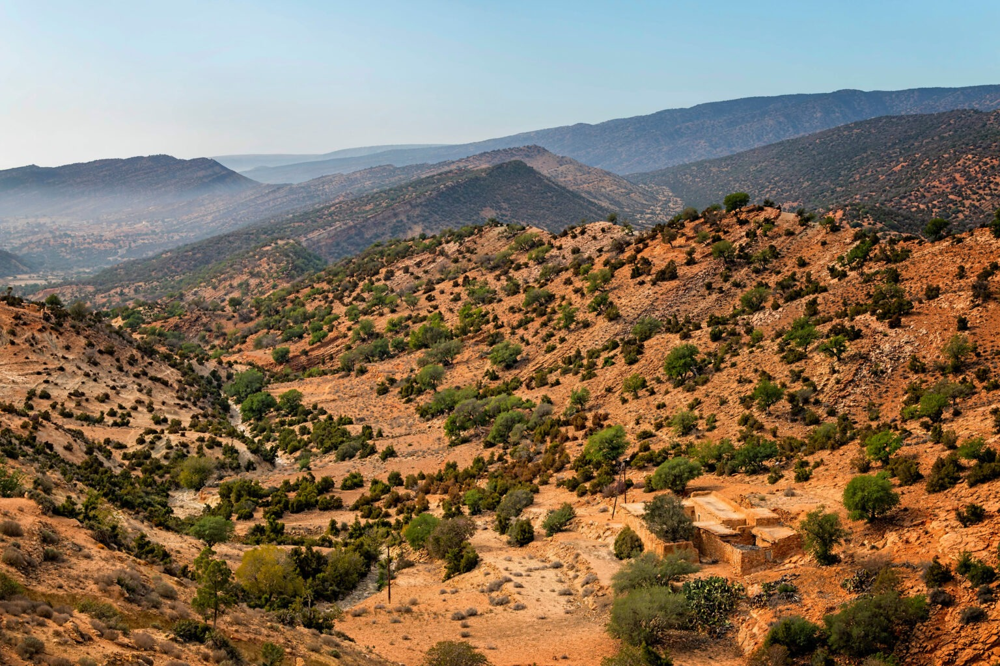
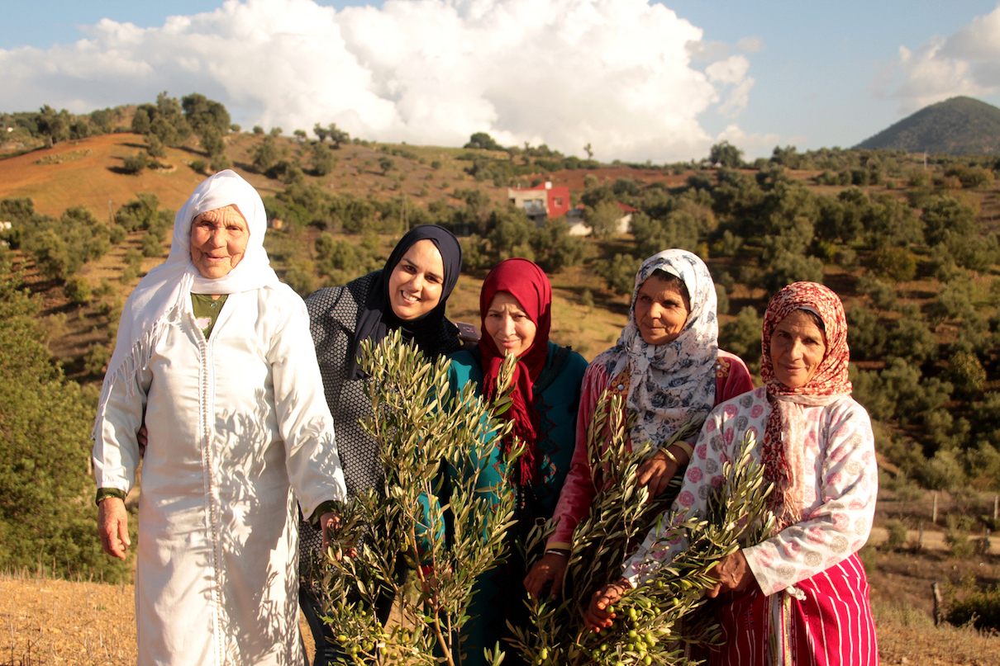
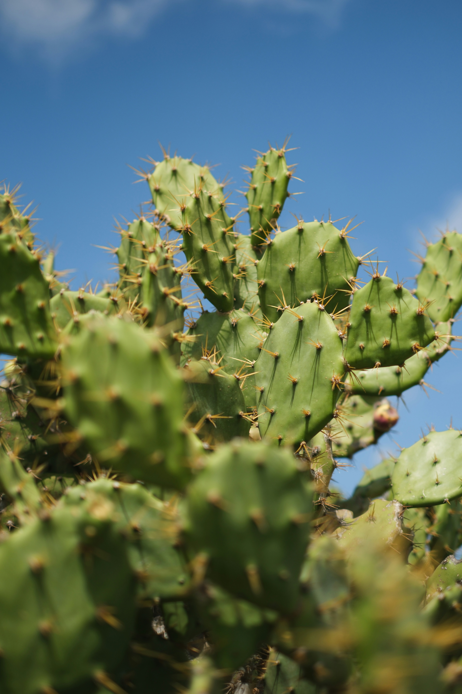
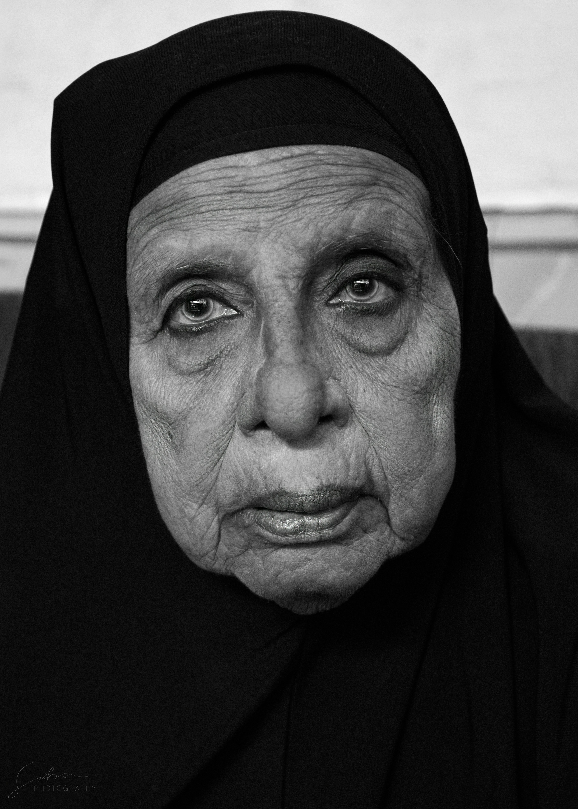
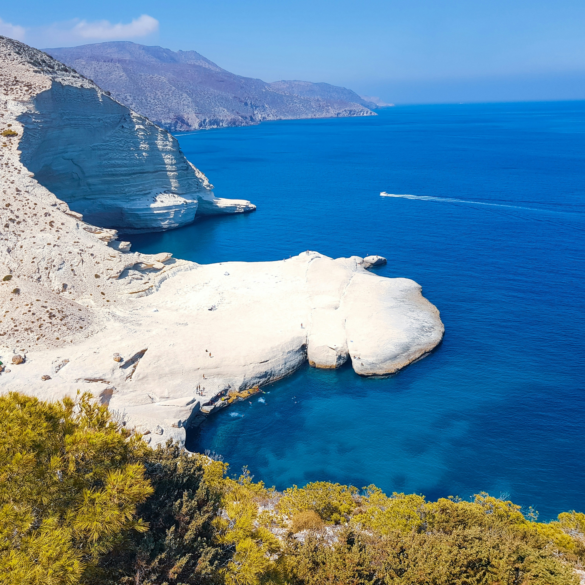
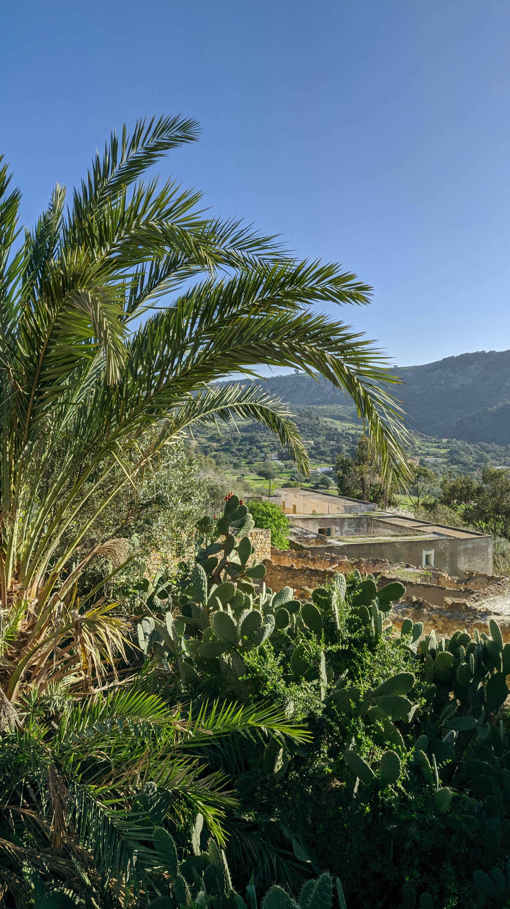

In the hills around Nador, where wild thyme grows between the rocks and olive trees have outlived generations, twenty-five women decided one day to stop working alone.
They had always made honey, pressed oil, and cooked jam in their own kitchens, for their families and neighbours. These were gestures learned from mothers and grandmothers, passed on without recipes, by sight, smell, and touch. Together, they gave these gestures a name: Thimdrine, a word that speaks of gathering, of staying together.
Thimdrine. From our hands to your table.





